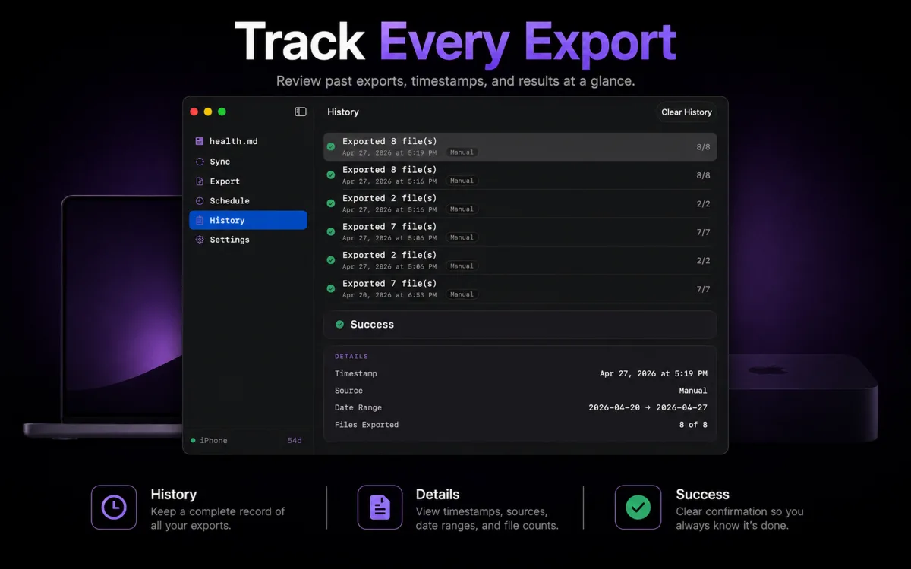
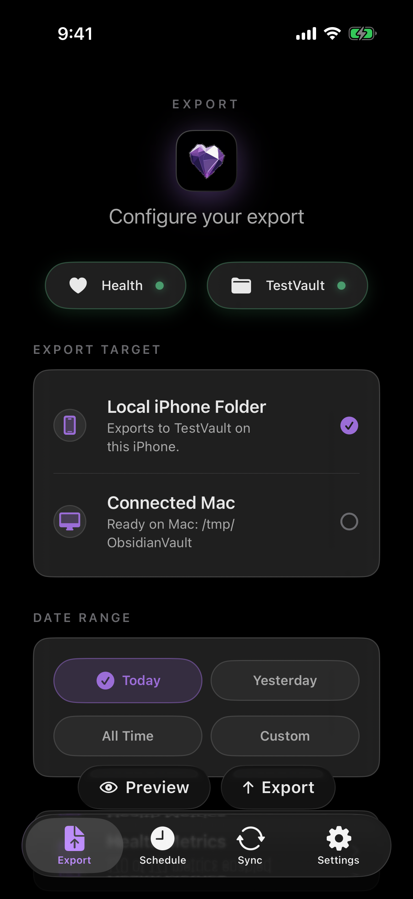
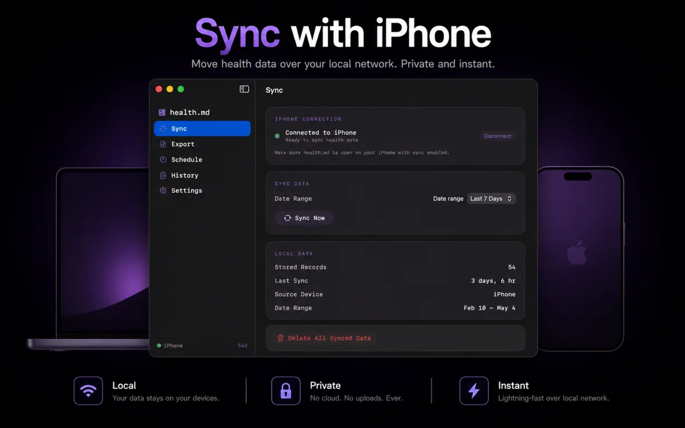

Product updates
Release notes and workflow ideas for Health.md.
Use this space to announce new app features, document workflow changes, and share examples for Apple Health, Obsidian, and local data export systems.

How to export Apple Health data to Obsidian.
Use Health.md to turn Apple Health data into local Markdown, Obsidian Bases, JSON, and CSV files that live inside a vault you control.

Health.md for Mac gives iPhone exports a desktop destination.
The Mac companion app lets your iPhone read HealthKit, configure the export, and write the resulting files directly into a desktop vault or local folder.
